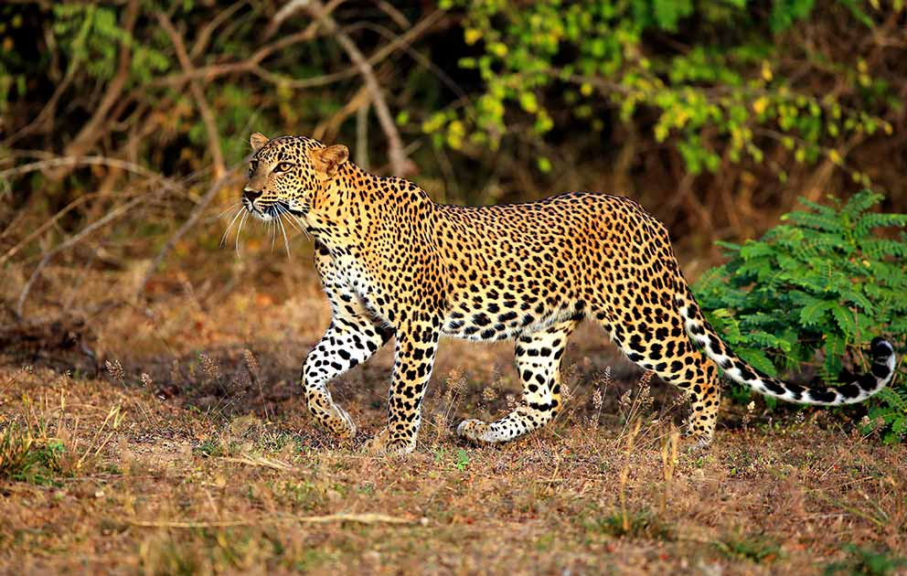

The Udawalawe National Park is in the southern dry-zone of Sri Lanka and spans approximately 31,000 hectares, providing for ample elephant safari opportunities as well as observing the Park's other Sri Lankan wildlife. The Park straddles two Provinces in the South of Sri Lanka and includes the Udawalawe Reservoir. The Udawalawe National Park is renowned for its stunning natural beauty and is second in popularity only to the Yala National Park.
The dry land area of the Udawalawe National Park is about 119 square miles excluding the reservoir, which is approximately 29,000 hectares. The Udawalawe Reservoir is situated within the boundaries of the Park, and draws its water from the Horton Plains Reserve, the Peak Wilderness Sanctuary and the Haputale area. The Reservoir has become an important area for breeding aquatic birds.
The deep waters of the Walawe Reservoir are surrounded by picturesque open plains and foothills. The most prominent features are the Kalthota Escarpment and the spectacular Diyawinne Falls to the north. Ulgala, in the west, is the most prominent peak and rises up to a height of nearly 380 meters, from the lowest point of the area which is at 100 meters above sea level.
The climate in the Park is characterised by seasonal rainfall and uniformly high temperature conditions. The average annual rainfall is about 1,500 mm in the south end, and it gradually increases towards the north. The annual average temperature is 32°C with no serious fluctuations being recorded.
Two rainfall peaks occur in a year, one between April and May and the other between October and November. A short dry spell is experienced between February and March, and a prolonged dry period is observed from mid-May until the end of September.
The center of the attraction is herds of elephants up to 150. The best time to enjoy the sight of large herds is during November to May. In the rest of the year the elephants tend to migrate to nearby Minneriya and Kaudulla national Parks.Other wildlife includes Purple faced langur monkeys, wild boar, sambar and spotted deer, buffalo and rarely sighted leopards and sloth bears.Among the reptiles are water monitor, mugger crocodile, estuarine crocodile and python (Python Molurus).
Of the 143 species of birds reported at Wasgamuwa National Park (Wasgomuwa) are endemic Red-faced malkoha and Ceylon jungle fowl are common sight in the park. Among the bird populations are Sri Lanka Trogon, racquet tailed drongo, endemic yellow fronted barbet, endemic Sri Lanka spurfowl, white necked stork and lesser adjutant stork.
Remains of a number of small rainwater reservoirs and ruins of temples reveal that the region of Wasgamuwa National Park (Wasgomuwa), was once home to prosperous villages. The ruins estimated to be about 1800 years old features a reclining Buddha statue at Buduruwayaya. Ruins of a palace with stone pillars are found in an island in a canal known as Kalinga Yoda Ela built by King Parakrambahu the great in the twelfth century.
Within Wasgamuwa National Park (Wasgomuwa) are three wildlife bungalows at Kadurupitiya, Mahaweli and Wawul Ebe. And outside of the park are two villas: Gale Bugalow and Angammedille. Within the park are five campsites: Mahaweli Ganga 1 & 2, Medapitiya, Ulpath Hatha and Wawul Ebe.
The ancient tanks and religious sites stand as evidence to the historical importance of the Wasgamuwa National Park. Historically, the most famous is Yudanganapitiya, the site where Sri Lanka's famous kings, Dutugemunu and Elara, camped during their mighty battles.
Minneriya National Park, also known as Minneriya Safari Park Sri Lanka established on August 12, 1997 (Gazette Notification No. 988/4), is one of Sri Lanka's most visited national parks in Sri Lanka which is an ideal destination for wildlife holidays & family adventure trip in Sri Lanka. Minneriya National Park covers an area of 8,890 hectares including the former Minneriya - Giritale Sanctuary. Minneriya - Giritale Nature Reserve (Blocks I, II, III, and IV) and Sigiriya Sanctuary. Minneriya Nationa park located in the district of Polonnaruwa (Pulathisi Pura) of North Central Province Sri Lanka middle of Sri Lanka's cultural triangle, is well known for its amazing elephant gathering which is one of Asia's best animal experiences. Further Minneriya National Park is one of the 70 IBA - Important Bird Areas of Sri Lanka which is recommended place for bird watching tours in Sri Lanka.
More crucially, this complex is one of the most important ecosystems in dry zone Sri Lanka for the long-term conservation of elephants (including displaced individuals) and associated flora and fauna, according to biodiversity conservationists. Furthermore, it is bordered by Wasgomuwa National Park, Riverine Nature Reserve, Flood Plains National Park, Kaudulla National Park, and Somawathiya National Park, giving enormous landscape - scale conservation prospects in the Dry Zone. The main entrance is located next to the Habarana-Polonnaruwa highway.
During the dry season, Minneriya National Park functions as a feeding place for elephants living in the Matale, Polonnaruwa, and Trincomalee districts' forests. If you visit during this season, you will have an unforgettable animal experience which make a remarkable wildlife holiday in Sri Lanka.
Minneriya is about 4 -5 hours drive from Colombo and close to many local attractions. Ex- Polonnaruwa, a UNESCO world heritage site, is only 20 kilometers away, and Habarana and Sigiriya are also nearby, enabling you to combine your cultural and wildlife holiday into one trip.
The Bundala National Park (6216 ha), is located in the Hambantota District, within the Southeastern Arid Zone of Sri Lanka. The park consists mainly of dry thorny scrubland and lagoons, namely, Koholankala (390 ha), Malala (650 ha), Embilikala (430 ha) and Bundala (520 ha). These shallow water lagoons form a complex wetland system that harbours a rich bird life, including several species of migratory waterfowl. Bundala is Sri Lanka's first Ramsar wetland - a wetland of international importance especially for migratory waterfowl. Recent studies have indicated that the Bundala Na- tional Park and its wetlands are being degraded due to various adverse factors. Therefore, this survey was intended to document the present status of biodiversity in this protected area. The systematic survey on biodiversity extended from February to May 2001, during which the area was visited at fortnightly intervals. The fauna and flora were surveyed using scientifically valid inventorying tech- niques.
The park consist of 7 major terrestrial vegetation/habitat types (dry thorny scrubland, arid zone forests, sand dune vegetation, gentle sea shore vegetation, arid zone maritime grasslands/pastures, riverine forest, anomalous Mesquite scrublands) and 6 wetland types (salt marsh, mangrove, brack- ish water lagoons, sandy and rocky sea shore, seasonal water holes and tanks, saltern). A total of 383 plant species were documented from the above vegetation and habitat types in Bundala. These include 4 endemics and 3 species that are nationally threatened. Shrubs and herbs are the predominant plant life forms of Bundala. A total of 324 species of vertebrates were recorded from Bundala National Park, of which 11 species are endemic, while 29 species are nationally threatened. A total of 52 species of colourful butterflies were also recorded from the park.
At present, the biodiversity of Bundala National Park is facing several threats, which could be summerized under habitat deterioration and degradation, direct exploitation of species, spread of invasive alien species, prolonged drought, and inadequately planned land-use practices. It is envis- aged that the findings of the survey would contribute to the conservation and management of this globally important Protected Area.
| Animal | Image | Living Location | Special Characteristics |
|---|---|---|---|
| Sri Lankan Elephant | Udawalawe National Park, Yala National Park, Lunugamvehera National Park, Wilpattu National Park and Minneriya National Park but also live outside protected areas. | The Sri Lankan subspecies is the largest and also the darkest of the Asian elephants, with patches of depigmentation—areas with no skin color—on its ears, face, trunk and belly. | |
| Leopard |  | Yala National Park and the Wilpattu National Park. | Sri Lankan leopards are generally larger in size than their relatives elsewhere. As with other leopards, the coat is a tawny or rusty yellow, marked with the dark spots and rosettes so characteristic of this species; individual markings are unique. |
| Sloth bear |  |
Yala, Wilpattu, Wasgomuwa National Parks | Sloth bears have shaggy, dusty-black coats; pale, short-haired muzzles; and long, curved claws which they use to excavate termites and ants. A cream-colored “V” or “Y” shape usually marks their chests. |
| Sperm Whale | Kalpitiya, Mirissa & Trincomalee | The sperm is dark brownish or brownish with white spots on its belly. It is thickset with small paddle-like flippers on the back and a series rounded humps. males can reach maximum length of approximately 24 metres (78.7feet) and weight up to 50 metric tonnes (55.1 tons). | |
| Blue Whale | Mirissa and Trincomalee | The Blue Whale grows to about 23-33 metres in length and weighs around 200 tonnes (depending on the subspecies). It is easily set apart from it congeners by the large size, the stubbly dorsal fin and it grayish-blue hue with mottling of light grey. It has 55-88 ventral plates, which aids them when feeding. |